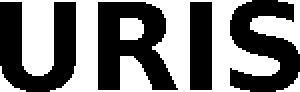

Trade Mark Journal No.2025/036 5 September 2025
WO0000001870533 (9,10,42,44)
Office of origin: European Union Intellectual Property Office (EUIPO)
Date of International Registration:4 July 2025
Date of designation in the UK:
4 July 2025

International priority date claimed: 7 February 2025
(European Union Intellectual Property Office (EUIPO))
(019140414)
- Class 9
- Electrodes and devices for neurostimulation for scientific and research purposes; electrodes; pulse generators; downloadable or online computer software for use in the design and use of medical instruments and devices used in neuromodulation, electrostimulation or electroceuticals treatment or therapy.
- Class 10
- Medical apparatus and instruments; medical devices; electrodes for medical use; medical electrodes and medical devices for use in either of neuromodulation, electro-stimulation or electroceuticals treatment and therapy; medical instruments and devices for use in either of electrostimulation, electroceuticals or neuromodulation treatment and therapy.
- Class 42
- Design, engineering, research, development and testing services for medical, scientific and technological applications; design and development of medical instruments and devices for use in neuromodulation, electrostimulation or electroceuticals treatment and therapy; technology research in the field of medical instruments and devices for use in neuromodulation, electrostimulation or electroceuticals treatment and therapy; medical and scientific research services; medical and scientific research in the fields of urology, neurology, gynecology, oncology, overactive bladder, neurodegenerative diseases, and chronic diseases using neuromodulation, electrostimulation or electroceuticals treatment and therapy; providing medical and scientific research information in the fields of urology, neurology, gynecology, oncology, neurodegenerative diseases and overactive bladder, and of chronic diseases using neuromodulation treatment and therapy; research and development of technology in the field of healthcare and medical devices; development of technology in the field of medical instruments and devices for neuromodulation electrostimulation or electroceuticals treatment and therapy; design and development of computer software; software as a service (SAAS) services featuring software for use in the design and use of medical instruments and devices used in neuromodulation, electrostimulation or electroceuticals treatment and therapy; providing temporary use of on-line non-downloadable software for use in the design and use of medical instruments and devices used in neuromodulation, electrostimulation or electroceuticals treatment and therapy.
- Class 44
- Medical services; healthcare services; medical services in the fields of urology, neurology, gynecology, oncology, neurodegenerative diseases, overactive bladder, and chronic diseases using electrostimulation, electroceuticals or neuromodulation treatment and therapy; medical consultancy; providing medical information in the fields of urology, neurology, gynecology, oncology, neurodegenerative diseases, overactive bladder, and chronic diseases using electrostimulation, electroceuticals or neuromodulation treatment and therapy; medical treatment of low urinary tract disfunction, parkinson's diseases, alzheimer's diseases, bowel disfunction, epilepsy, migraine and infertility using electrostimulation, electroceuticals or neuromodulation treatment or therapy; rental of medical instruments and devices for use in electrostimulation, electroceuticals or neuromodulation therapy.
STIMVIA
Representative: ERNEST GUTMANN - YVES PLASSERAUD S.A.S., 104 rue de Richelieu, F-75002 Paris, FRANCE